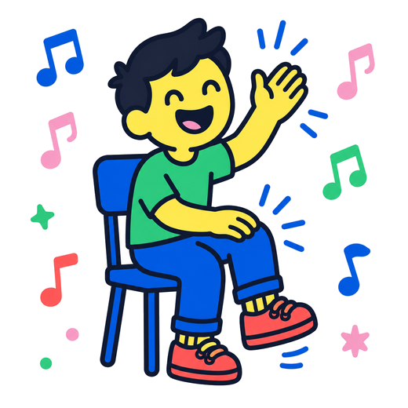
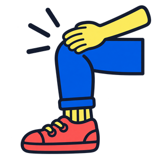

Body percussion is muziek maken met je eigen lijf. Je hebt er niets voor nodig: klappen in je handen, stampen met je voeten, tikken op je benen. Samen wordt dat een ritme.
In deze les gaan we klappen. Later komen er meer geluiden bij.
De klapjes komen van rechts. Klap samen op het moment dat er een in de ring staat. Elke maat gaat het een beetje sneller — en verderop komt er soms een klapje bij.

Je hebt nu twee geluiden: klappen en op je knieën tikken. Dat tikken klinkt lager en doffer dan een klap — een beetje als een trom onder je handen. Sla met je vlakke handen op allebei je knieën tegelijk. Zeg er boem bij, dan hoor je meteen waar het naartoe moet.
In elk vakje staat wat je op die tel doet. Lees van links naar rechts en dan naar de volgende regel, net als bij lezen. Staan er twee plaatjes in één vakje, dan doe je ze allebei in die ene tel — twee keer zo snel dus.